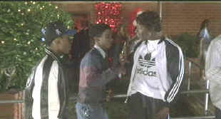

|
Wood,The/C+,B+ |
|
Paramount/1999/104/ANA
1.85
|
Tracing
the growing pains of three African-American teenagers, The
Wood alternates between present and past, as two
friends try to get their best buddy to the church on time, all
the while remembering the origins of their friendship.
|
 |
|
Bonding
at the dance. ©Paramount |
The Wood
works best when it's looking back. The boys remember the years when sex dominated
their every move. Big Mike narrates tales of the Englewood
"hood", known as The Wood in local parlance. The
kids go through junior high and high school together, looking
virtually the same through every period. This makes the time
changes a bit confusing. No new ground is broken, but these
young men are good kids, looking to stay clean. The
"hood" has its bad news toughs, but the focus is more
middle class juiced up by perhaps too much profanity.
The modern tale fails utterly, often
displaying bad taste. The truth is, the filmmakers did not
need flashbacks to spice up a possible linear script treatment.
The choice comes close to sinking The Wood, but wood floats, and
there's enough in the core scenes of this movie to make it
enjoyable.
Omar Epps, Taye Diggs and Richard T.
Jones play the trio of friends on the wedding day. Epps is
strong as Mike and Jones solid as Slim, but Diggs does some
sloppy drunk work as Roland. Sean Nelson, who was wonderful in Fresh,
seems all at sea as young Mike. His awkwardness overpowers every
other aspect of the character. Duane Finley is one-dimensional
as young Slim and Trent J. Cameron is okay as teenage Roland.
Malinda Williams makes a pretty picture as the source of Mike's
juvenile sexual hunger.
Unfortunately, the young actors do not match up very well with
their grown counterparts. Ironically, the mature actors, except
for Diggs, are the most appealing despite poor
scripting and the youngsters, given the better material,
are less charismatic.
A very good-looking DVD, The Wood gets the anamorphic
treatment from Paramount. The resulting detail is excellent with
no enhancement artifacts adding noise and extra edges tot he
picture. Color rendition is accurate. The light output is
outstanding. Contrast range consistently adds pop to the
picture. Altogether, a very easy-watching DVD. A few slightly
soft scenes bring the DVD presentation down a notch from
perfection, but they are hardly noticeable.
The Dolby Digital 5:1 surround is fine, though the film does not
call for an aggressive mix. The rap beat does not overpower the
action and provides an accurate, tight, bass. As a reminder, you
need to select Dolby Digital 5:1 under the audio options if
that's your preference since Paramount defaults to the Dolby
Matrixed tracks.
|
The
Feature
Archive has articles ranging
from John
Ford to Blonde
Bimbos, The
Heistmasters, Akira
Kurosawa and Frank
Darabont.

Preston Sturges was Hollywood's resident comic genius for more
than a decade. His movies are timeless. Click on his image to read
all about it.
Check out the Movie
Poster Archive
for short bios and images of Susan Hayward, Kirk Douglas, Katharine
Hepburn and many more. This month's featured star is Clark
Gable.
]Imaging
Science Foundation
The Imaging
Science Foundation promotes proper standards in home theater
viewing. ISF trained technicians offer monitor calibration
services to consumers. The difference in a properly
calibrated monitor can be astounding. Click on the image to find
an ISF member near you.
HOT
LINKS
DVD
Verdict
They
may be judgmental, but that's the point, isn't it. Lots of DVD
reviews plus news and more
The
Home Theater Forum
Looking for
lively and helpful exchanges on home theater, DVD, movies. Visit
this friendly site and get a hardy welcome.
Home
Theater Reference Reviewing System

When you read a DVD review it's of utmost importance to know
what equipment is being used to evaluate quality. Click on the
projector to find out more.
|